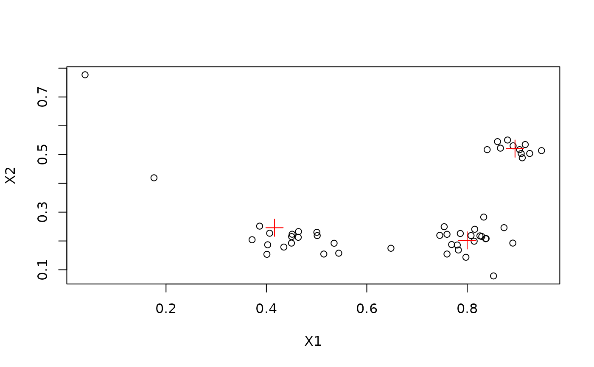

Sampling from a Data Stream (Data Stream Operator)
Source:R/DSAggregate_Sample.R
DSAggregate_Sample.RdExtracts a sample form a data stream using Reservoir Sampling.
Details
If biased = FALSE then the reservoir sampling algorithm by McLeod and
Bellhouse (1983) is used. This sampling makes sure that each data point has
the same chance to be sampled. All sampled points will have a weight of 1.
Note that this might not be ideal for an evolving stream since very old data
points have the same chance to be in the sample as newer points.
If bias = TRUE then sampling prefers newer points using the modified
reservoir sampling algorithm 2.1 by Aggarwal (2006). New points are always
added. They replace a random point in thre reservoir with a probability of
reservoir size over k. This an exponential bias function of
\(2^{-lambda}\) with \(lambda = 1 / k\).
References
Vitter, J. S. (1985): Random sampling with a reservoir. ACM Transactions on Mathematical Software, 11(1), 37-57.
McLeod, A.I., Bellhouse, D.R. (1983): A Convenient Algorithm for Drawing a Simple Random Sample. Applied Statistics, 32(2), 182-184.
Aggarwal C. (2006) On Biased Reservoir Sampling in the Presence of Stream Evolution. International Conference on Very Large Databases (VLDB'06). 607-618.
See also
Other DSAggregate:
DSAggregate(),
DSAggregate_Window()
Examples
set.seed(1500)
stream <- DSD_Gaussians(k = 3, noise = 0.05)
sample <- DSAggregate_Sample(k = 50)
update(sample, stream, 500)
sample
#> Reservoir samplingClass: DSAggregate_Sample, DSAggregate, DST
head(get_points(sample))
#> X1 X2 .class
#> 109 0.83291183 0.2829034 1
#> 474 0.03873609 0.7770021 NA
#> 499 0.90968289 0.4887009 2
#> 324 0.83677629 0.2078957 1
#> 297 0.94807296 0.5136577 2
#> 108 0.86037990 0.5448045 2
# apply k-means clustering to the sample (data without info columns)
km <- kmeans(get_points(sample, info = FALSE), centers = 3)
plot(get_points(sample, info = FALSE))
points(km$centers, col = "red", pch = 3, cex = 2)
